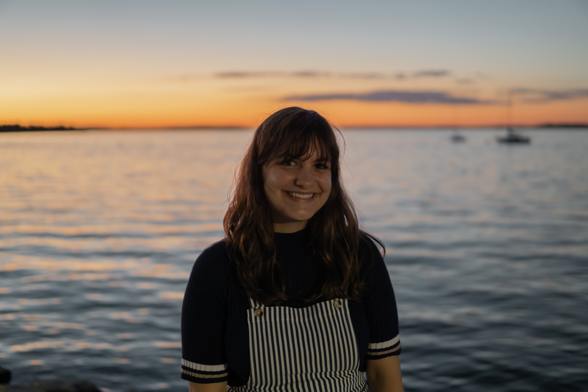
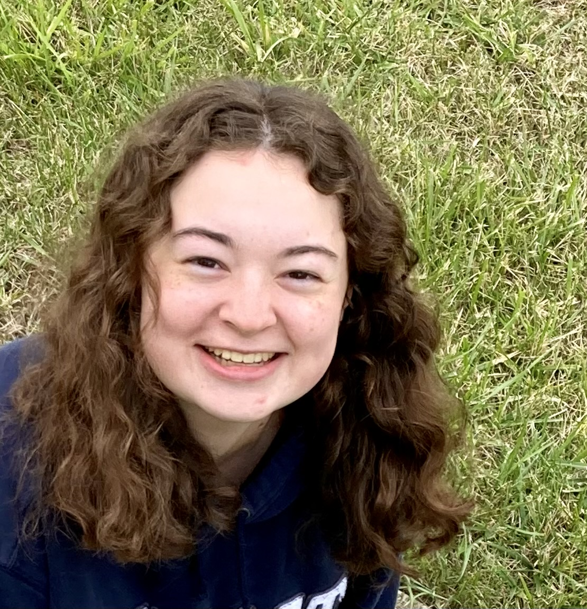
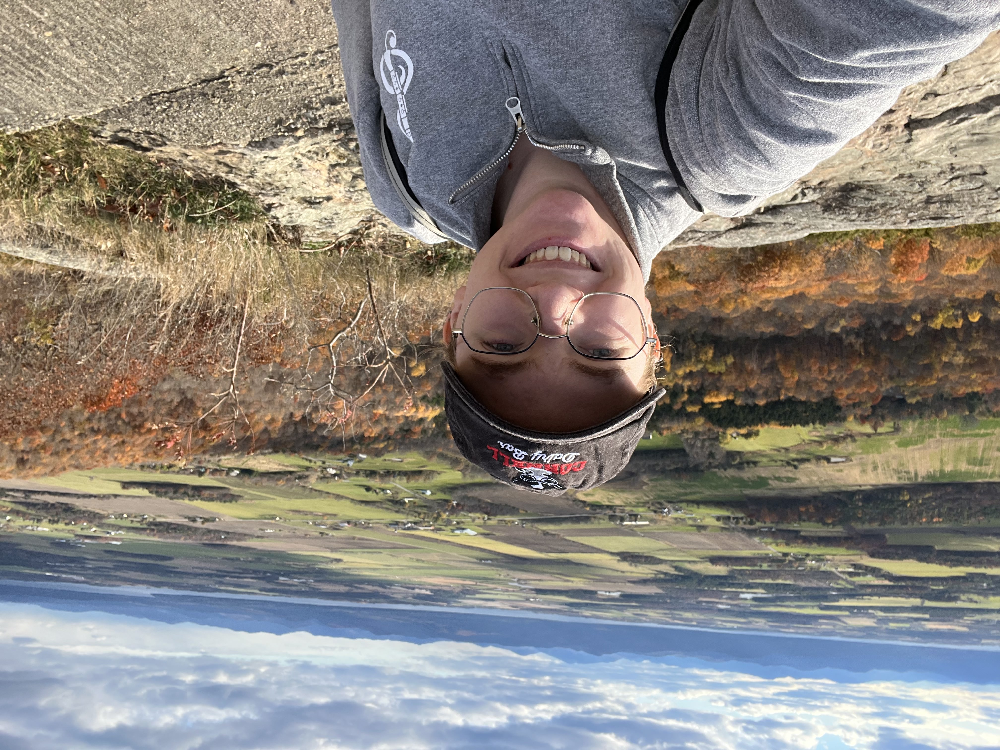
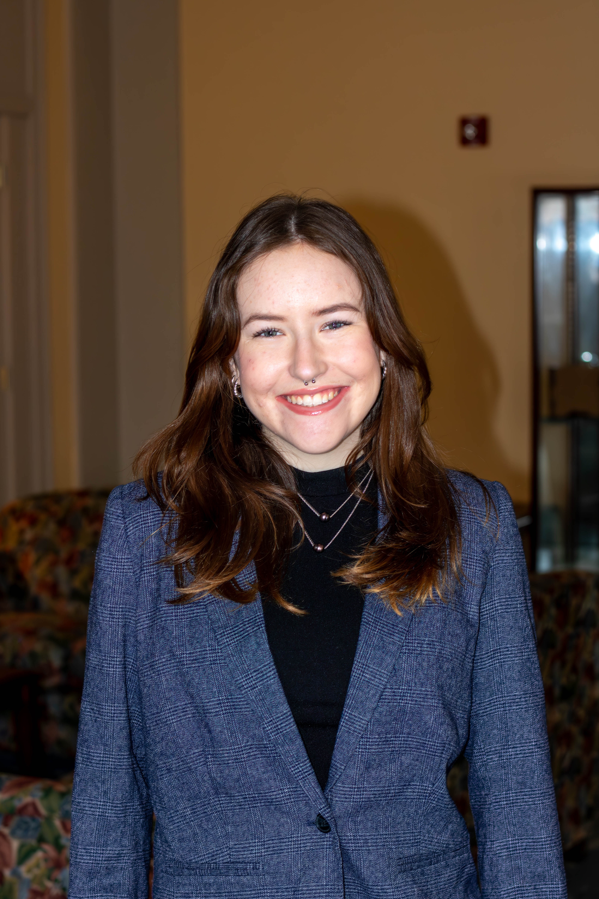

Chloe Klare is a Penn State PhD student who studies young AGN jets with the Australia Square Kilometer Array Pathfinder Variable and Slow Transients Survey.
Charlotte Ward

Assistant Professor Department of Astronomy and Astrophysics The Pennsylvania State University
Publications (ADS)
Publications (ORCiD)
Penn State Webpage
Theme based on template from orderedlist
| Intro | Research | Team | CV |


Miranda Zak is a Penn State PhD student researching the origin of millimeter emission in radio-quiet AGN with the Atacama Cosmology Telescope and Swift.

Kendall Sippy is a Penn State PhD student applying joint pixel analysis techniques to Euclid and Rubin data to identify populations of 'wandering' non-nuclear SMBHs.

Grace Davis is a Penn State undergraduate student working on using machine learning techniques to identify anomalous transients in time-domain surveys.
Naren Arun is a Penn State undergraduate student working on using machine learning techniques to identify transients from non-nuclear SMBHs in ZTF and Rubin.
Veena Krishnaraj is a Princeton undergraduate student applying multi-resolution forward modeling methods to time-delay cosmography with strongly lensed supernovae.